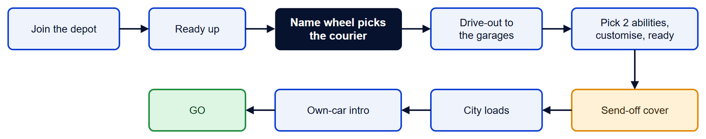
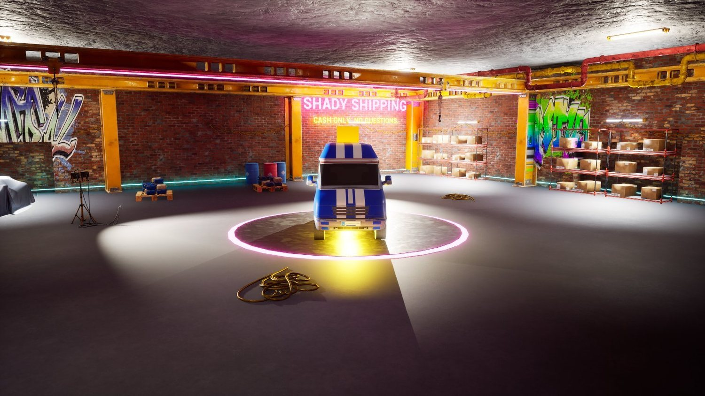
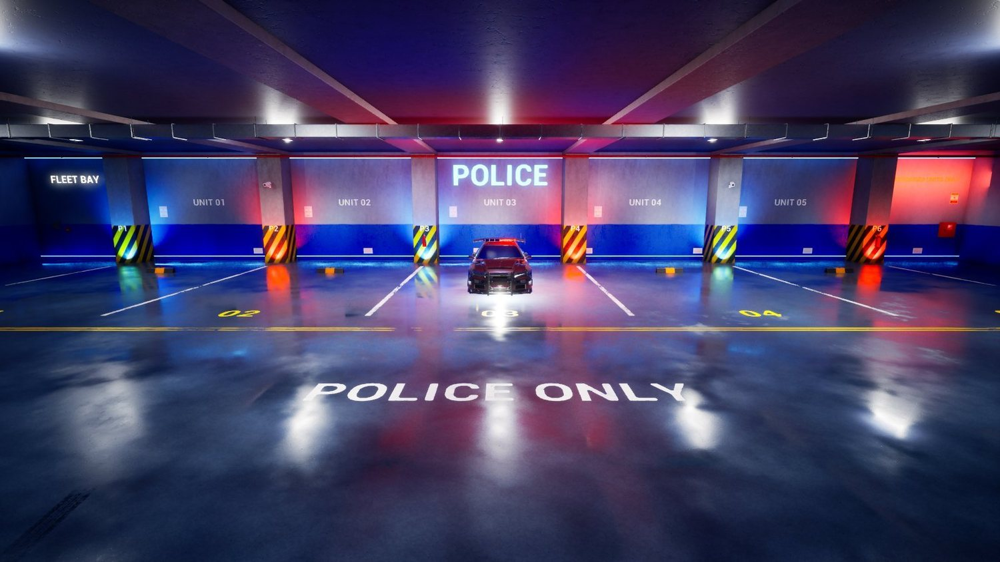
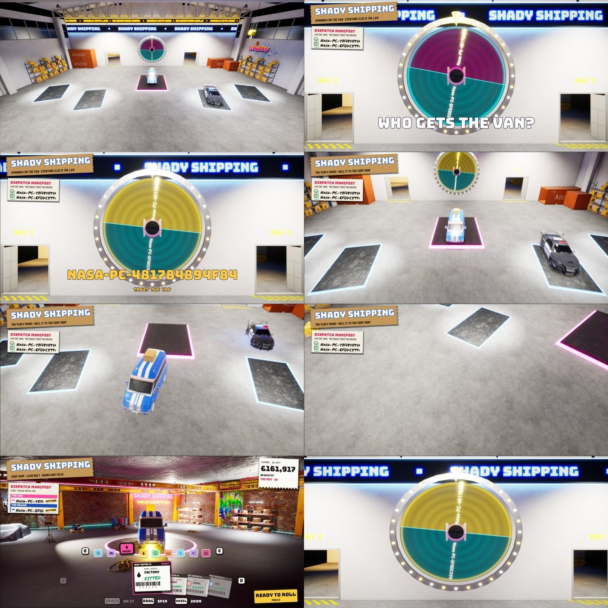
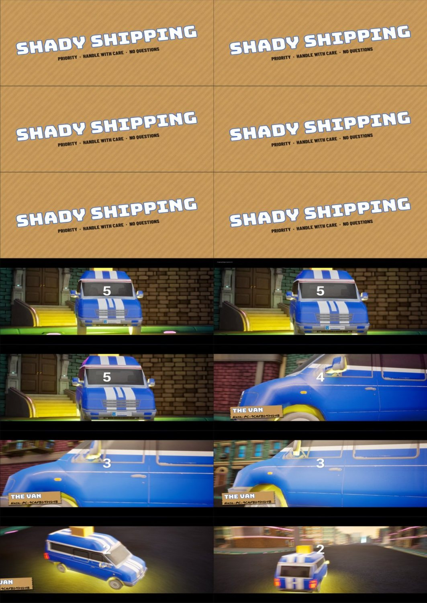
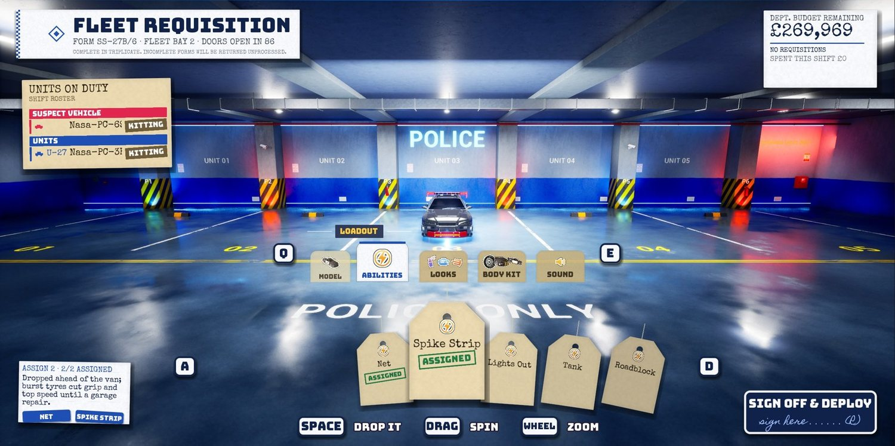
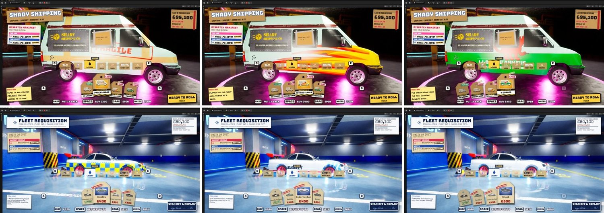

The dispatch depot: the match line-up on the stage and pads, with the SHADY SHIPPING ticker across the back wall
What it does for play. The lobby takes every player from joining to the first GO, and turns the wait before a round into part of the show. A name wheel picks who drives the van. Then each team goes to its own garage to pick abilities and make their vehicle their own.

From joining the depot to GO
How it works
Stage
What happens
The depot
Players join and arrive in a shared warehouse. The match line-up stands on show: the van on a stage, one police car per other player on pads. Everyone presses Ready.
The name wheel
A game-show wheel spins and lands on the courier. It asks WHO GETS THE VAN?, because everyone drives. Last round's courier is greyed out, so nobody drives the van twice in a row.
Drive-out
The cars leave the depot on set routes through real gates into their team's garage.
The garages
The van goes to the Shady Shipping chop shop; every other car goes to the police fleet bay. Each room, its lights, screens and music say which team you are on.
Abilities, then looks
First pick 2 abilities (last round's build is pre-selected). Police can see each other's builds; the courier's picks are never shown to them. Then customise, then Ready.
Send-off
When the last player is ready, each car drives out of its garage and a team-styled cover fills the screen: parcel tape for the van, a police case file for the cops.
Trip to the city
The cover moves while the city loads, with tips and a progress bar, and the round waits until every PC runs smoothly.
Intro
During the countdown each player sees their own car charge in with a title card, then GO.
After the round
Everyone returns to the depot.
Customising
Rule
What happens
Groups
Tabs sit in four groups: Loadout, Looks, Body Kit and Sound.
Items are bought with the wallet and kept for good.
Paint any part
Each body kit part can take its own colour.
Police identity
The police car must stay a police car: the lettering and light bar are locked.
Show, don't tell
Fitting a part throws the old one off and flings the new one on. The camera frames each part above the tabs.
Easy to add
Every item is one row in a table plus its model, so anyone can add items without code.
Value
Setting
Garage time
90 s
Name wheel spin
6 s
Drive-out / send-off
4.2 s / 3.5 s
Minimum players
2
Item prices
£100 to £750


The two garages: the courier's chop shop (left) and the police fleet bay (right)
The liveries. Top: van Parcel Wrap, Hot Rod Flames and Y Ddraig. Bottom: police Heddlu, Interceptor and Ghost
From the build logLobby and garage
Everything in the build
Feature
What it does for play
Dispatch yard
Players gather, see the line-up of cars and ready up
Name wheel
A game-show wheel picks who gets the van, never last round's courier
Drive-outs
The van drives out of the front wall; the police leave through their own doors
Two garages
A chop shop for the van and a fleet bay for the police
Paper-style screens
Parcel tags for the van, a police requisition form for the cops
Buy once, fit for all
Parts are bought from the wallet once and every player sees them
Paint mode and fit show
One key swaps a part to its colours; fitting a part throws the old one off
Liveries
Three bought looks per side, two with a Welsh flavour
Garage camera
Drag to spin, wheel to zoom; the car always sits above the menus
Send-off and city intro
A cover hides the load until each player's own intro shows their car
From joining the depot to GO
From the build

The depot in play: the yard, the spin, the winner, the drive-out and the garage

The trip into the city: the parcel-tape cover, then the van's own intro shots, then the chase camera

The police garage: the requisition form, the folded tab groups and the live part on the selected card

The liveries. Top: the van's Parcel Wrap, Hot Rod Flames and Y Ddraig. Bottom: the police Heddlu, Interceptor and Ghost
Wiki / Behind the design / Lobby & garage
Behind the design
Why lobby
Built by Abdullah · Numbers by Dafydd · Screens styled by Abdullah · Tested by Abdullah
Why we chose this
Option
For
Against
Verdict
Menus over a black screen
Quick to build
No sense of team or place
Rejected
A lobby inside the city map
No map change
Puts the lobby in the riskiest file; reloads every round
Rejected
A garage showroom map, wheel first, team garages after
The team is obvious from the room before any text; customising means something once you know your car
A map change to hide
Chosen
Customising only matters once a player knows what they will drive, so the wheel comes first. Abdullah set the art direction: the depot, the chop shop and the fleet bay must each look like a different place.
What can go wrong
Situation
What the game does
A player never presses Ready
When the garage timer runs out, whatever is locked in or pre-selected is used
The map takes a while to load
Players wait up to 10 minutes to reconnect instead of falling back to the default map
A slower PC loads late
The round waits until every PC is running smoothly, so nobody misses the drive-in
How we know it works
Check
Target
Result so far
Teams obvious
Testers know their team from the room alone
Met in the uni playtest
Everyone starts together
All covers sweep away at once
Met after the loading fix
Items add without code
A new item is one table row
Met
From the build logLobby and garage
What we set out to do
Abdullah asked for the lobby to be designed properly before any code ("lets design this properly"), so it was written up in full in the design document first. It was then built in stages: the yard and the name wheel, then the two garages, then the send-off into the city. Each stage was tested before the next.
How it was built
The flow. In the yard, a game-show wheel spins and lands on who gets the van. Abdullah set the drive-out choreography: the van drives forward towards the camera and out of the front wall, not back under the wheel, and each police car leaves on its own move, so the split into teams feels like an event. Each side then customises its car and picks two abilities.
Into the city. Abdullah wanted the loading screen to go straight into a cutscene. The lobby's last wipe (parcel tape for the van, a case file for the police) stays on screen through the map change and lifts only when that player's own intro is showing. Each player sees only their own car arrive: a long-lens charge, a title card, then a crane down into the chase camera. The cars roll in from behind their starts and cross them at speed on GO. The covers now move while they wait, with tips from a table anyone can edit.
Rooms. Abdullah wanted the van, the police and the main lobby to feel like three distinct places, and asked for cheap options. He bought one Unreal-ready pack for each room (about £12 each) after checking real screenshots: a navy car park for the police, a brick hideout for the van and a white steel depot. He rejected neon frames around black openings as placeholders, so every room got real doors. He found the car park "claustrophobic", so its ceiling went from 3 m to 4.8 m. The packs were cut from 3.7 GB to 1.6 GB, and the yard later gained a parcel conveyor, drones and pigeons.
The garage screens. Every visual change was shown to Abdullah as a mock-up on a real screenshot first. He rejected the first tab icons twice and called the yellow "locator sticker" icons "much much better". For fitting a part he asked for "arcadey" feel: the old part is thrown off, the new one flies on and the car bounces. The van garage was redrawn after the first mock-ups, drawn without the van's real parts, looked poor. Abdullah chose the parcel-tag design from the second set.
Cameras and light. Abdullah said the camera positions needed far better work, because the menus fill the lower half of the screen. Every shot now keeps the car in the top half and stands further back on wider screens. He also found the paint hard to judge in the chop shop, so it got the same neutral stage light as the fleet bay.
The big decisions
Full comparison: Trade-off Appendix.
Option
Pros
Cons
Verdict
One bought pack per room, about £12 each
Finished rooms in a day; each its own look
1.6 GB to keep in source control
Chosen
City pack plus props built in the engine
Free; matches the city
No building shells or workshop props
Rejected
A realistic rusty garage scene
A complete repair shop
Too realistic for the stylised city
Rejected
A cheap low-poly props pack
Right style in its pictures
Marked as generated content; promo art only
Rejected
Abdullah's call: three distinct places, at low cost, with each pack checked before buying.
Option
Pros
Cons
Verdict
Four folded groups (Loadout, Looks, Body Kit, Sound)
Short row; the car stays visible
One click more to reach a group
Chosen
One long row of tabs
Everything in reach
Unreadable at 14 tabs; covers the car
Rejected
Two rows
Readable
Covers the lower screen
Rejected
A side list like a menu
Scales
Looks like a settings page
Rejected
Abdullah picked the folded groups from four mock-ups and set their order.
Playtesting and what changed
Date
Who played
What they found
What we changed
1 Nov
Abdullah
The load lifted onto a random spot of the city; he saw other players' roll-ins
The cover holds until his own intro; one intro per player
1 Nov
Abdullah
Nobody would find the right-drag camera
Drag with either button, wheel to zoom, keycap hints
2 Nov
Abdullah, team project
The waiting screen showed through the cover; GO hung on 1 for 10 s
Cover on the top layer; each screen shows GO by its own clock
2 Nov
Uni, five online rounds
The lobby worked with every player on their own PC
No change needed
5 Nov
Abdullah
Icons looked the same, photos cheap, empty cards tacky
Locator stickers, part cut-outs, crossed-out empty cards
5 Nov
Abdullah
A £750 part with £100 read as "650 short" in the price spot
The price is struck through with the shortfall under it
7 Nov
Abdullah
Parts sat behind the menus; paint was hard to see
New camera rule; neutral stage light
9 Nov
Uni playtest
Players fell back to the default map after the lobby
Players now wait up to 90 s for the city to load
Problems and fixes
Problem
Cause
Fix
The arrival cover ticked but drew nothing
Its layout was built after the screen was made
Build the layout when the widget is created
The checks said the cover worked when it did not
Screenshots taken during another player's load show the editor, not a player
Check a capture's size and time; trust Abdullah's eyes
The garage camera jumped when parts were tried on
Smoke left in the world counted as part of the car
Frame the car from its visible meshes only
The depot's ticker sign blurred, then looked laggy
Text panned inside a material smears under anti-aliasing
Slide the strip itself as real geometry
The garage blinked on every scroll
The tab row was rebuilt each scroll
Rebuild only when something changes
Lessons
A screenshot taken while another player loads can show the editor instead of a player, so the player's own eyes are the better test.
Showing a mock-up on a real screenshot before building saves whole rounds of rework, as the rejected first van garage showed.
Garage shots must be framed by a share of the screen, not fixed angles, or wide screens break them.
Latest
Date
What changed
Why
1 Nov 2026
Yard, name wheel, garages, drive-outs and city intro
Built in stages from the lobby design
2 Nov 2026
Three rooms dressed and moved to the team project
Ready for the uni playtest
5 Nov 2026
Police garage polish: tab groups, cut-outs, paint mode, fit show
Abdullah: the garage is the first thing players touch
6 Nov 2026
Conveyor, drones and pigeons in the yard
Bring the yard to life between rounds
7 Nov 2026
Van garage redesign, liveries, new cameras, chop shop light
 Shady Shipping
Shady Shipping